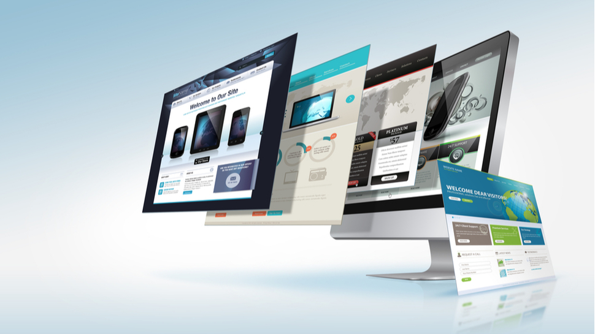

Programy a data
Úvodní stránka
Obsah stránek

Programové a datové soubory
Soubory a adresáře, cesty, programové soubory, datové soubory
Operační systémy
Systémové programy, aplikační rozhraní, rozdělení
Ovladače
Ovladače zařízení, Firmware, utility
Aplikační software
Kancelářské balíky, grafické aplikace, Malware, databázové systémy
Instalace programů
Instalace a odinstalace, lokalizace, registrace
Softwarové licence
Multilicence, komerční software, demoverze, Opensource